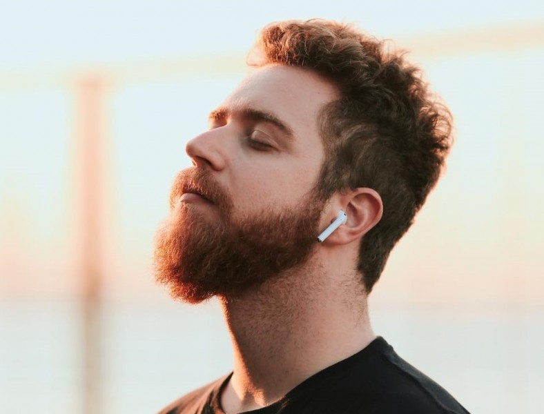

Lucas Rossi Feuerschütte, Youtuber
youtuber, gamer, streamer e vlogueiro

Biografia de Lucas Rossi
Luba nasceu e cresceu em Santa Catarina, na cidade de Tubarão. Quando terminou o colégio, chegou a cursar a faculdade de psicologia, porém logo desistiu do curso por achá-lo muito monótono. Antes disso, como já comentou muitas vezes, pretendia ser padre. Adotou duas gatas de estimação, chamadas de Misty e Galadriel. Misty faleceu em 18 de março de 2022.Linha do tempo
2010 Seu primeiro vídeo na plataforma Youtube foi postado em 16 de setembro de 2010. No início, seu conteúdo eram vídeos de humor com a personagem "Rogéria", interpretada por ele, gameplays de jogos, e vlogs sobre sua vida, com participação de seus amigos e familiares, como a também influenciadora Gabbie Fadel e seus pais.
2010 (Até 2020) Seu primeiro quadro fixo foi o "Ask Luba", onde ele respondia perguntas de seus inscritos. O quadro durou até 2 de abril de 2020, com um total de 76 episódios. Em um de seus vídeos, Luba revelou que nos primeiros episódios, a maioria das perguntas eram criadas por ele mesmo.
2012 Em 2012, foi um dos participantes do concurso Youtube Nextub Brasil, o qual foi o grande vencedor, ganhando um prêmio de R$ 20.000,00. Ele usou o prêmio para investir em seus canais, transformando seu quarto em um estúdio, com equipamentos profissionais. Em dezembro do mesmo ano, lançou o canal "LubaTV Games", focado exclusivamente em jogos.
2014 No dia 4 de outubro de 2014, em um vídeo publicado em seu canal com o título "Algumas verdades", Luba revelou ser homossexual.
2015 Em 2015, passou a postar vídeos diariamente, em seus dois canais, o que continuou até meados de 2020. A programação no canal principal era composta por quadros como Luba Feira, Comentando Comentários, Ask Luba, e Turma-Feira, um dos mais duradouros.
2016 Em 2016, com o sucesso do youtuber no país inteiro, foi lançada a Luba Fest. Uma turnê do Luba, idealizada para aproximar ainda mais o ele dos fãs, com brincadeiras, desafios e bate-papo em cima do palco. Ele passou por diversas cidades brasileiras, sempre lotando os teatros onde se apresentava.
2020 Em maio de 2020, passou a diminuir aos poucos a sua frequência de vídeos, chegando algumas vezes a tirar férias, postar alguns vídeos, e depois sumir novamente. Até que em janeiro de 2021, anunciou que iria se afastar do canal sem uma data de retorno, para poder descansar e dedicar-se a si mesmo.
2021 Em julho de 2021, para a alegria dos seus mais de 8 milhões de fãs, Luba voltou a postar vídeos, porém, não mais diariamente. Seu vídeo de volta ao canal, "o JOVEM MÍSTICO precisa ACABAR | OSHI #114", já possui mais de 600 mil curtidas.
Em setembro de 2021, anunciou um projeto junto ao seu melhor amigo, também youtuber, Jean Luca chamado "PodVersus com Jean Luca x Luba", um Podcast em parceria com a Dia Estúdio. Entre 25 e 29 de novembro de 2021, participou do reality show Casa Black Friday, onde ficou confinado com mais 5 infuencers numa casa.[
Se quiser saber mais sobre Luba, Clique
Aqui
Fontes utilizadas na página: Criadores iD e PureBreak< /a>